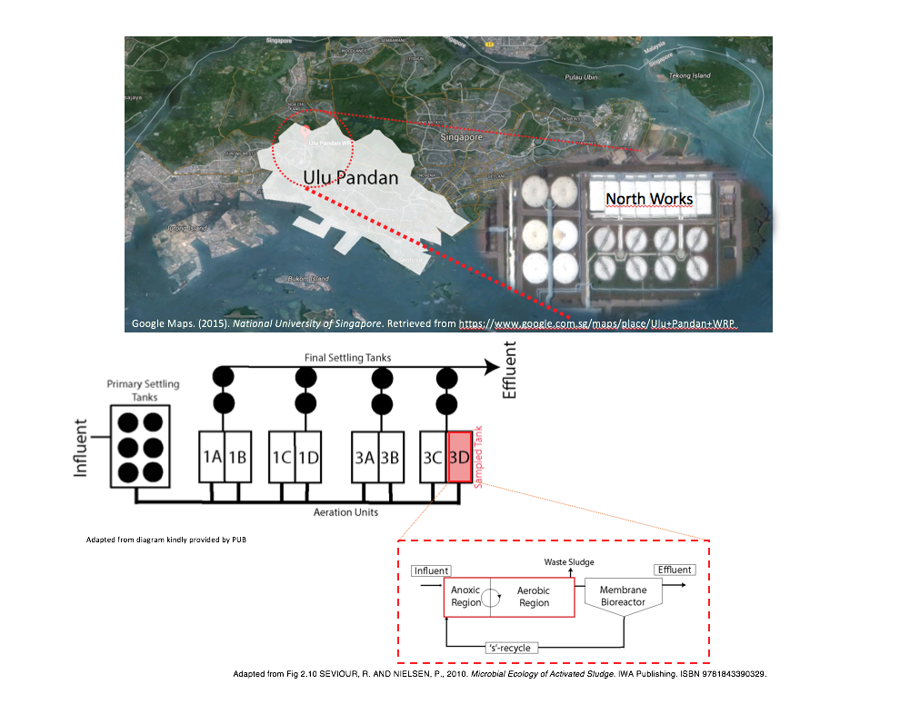
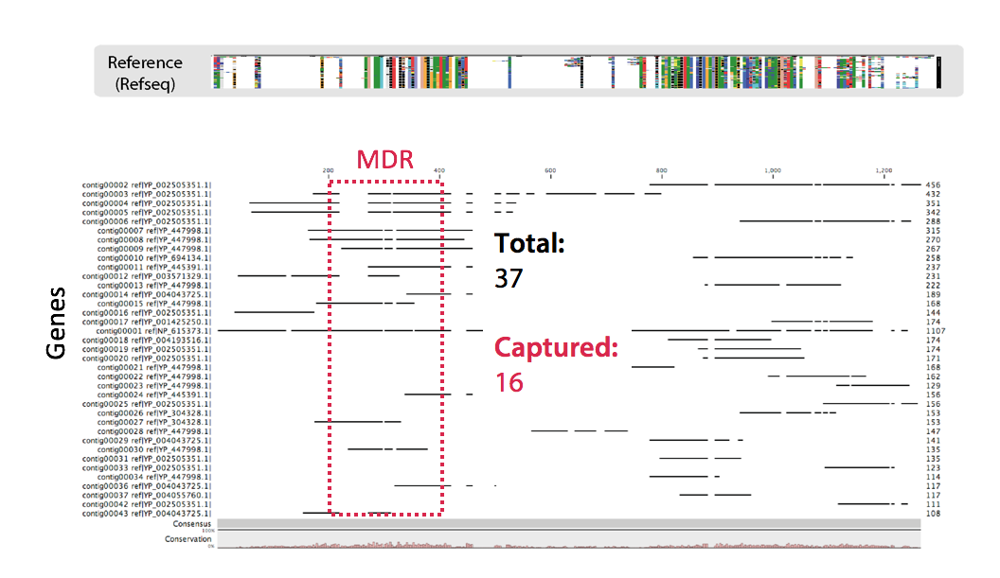
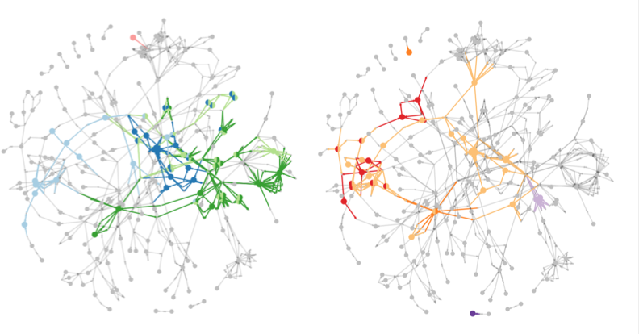

Who am I
Wesley GOI, SCELSE PhD Student

- Interests:
- Data Analytics
- Travelling

My research focus
Complex Microbial Communities of a Wastewater Treatment Plant

What do I do
- Genomic and transcriptomic data analyses

What do I do
- Functional Analyses
- Metabolic Networks

How I do this (Toolkit)


- R statistics,
- Python and Perl for scripting
My lab
Peter Little (Main), Rohan Williams (CO)